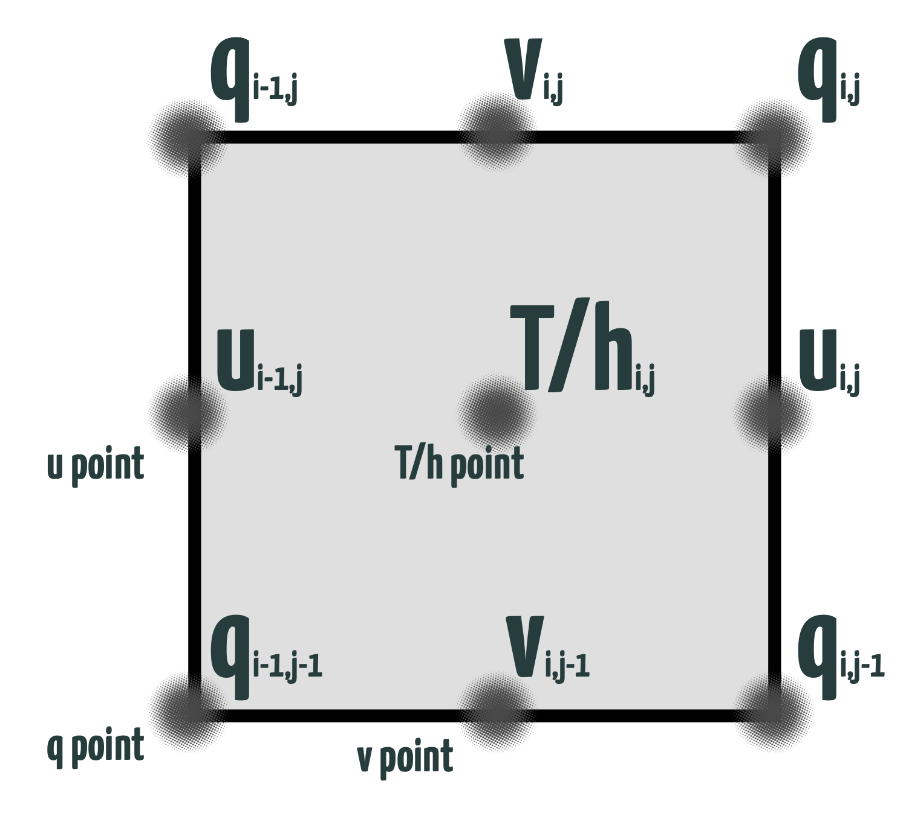

Regional MOM6 Grid#
Horizontal Grids#
Warning
When user use the raw model output, a ocean_static.nc file is also needed for getting the geospatial location of the grided values.
To understand all the grid points that is provided in ocean_static.nc, we need to first introduce the Arakawa C grid that is used by regional MOM6.
What is Arakawa C Grid? (optional read)
The Arakawa grid system, including the C-grid, was introduced by Arakawa and Lamb in 1971. The “staggered” Arakawa C-grid is named so because it further separates the evaluation of vector quantities compared to the Arakawa B-grid. For instance, instead of evaluating both east-west (u) and north-south (v) velocity components at the grid center, the C-grid evaluates the u components at the centers of the left and right grid faces, and the v components at the centers of the upper and lower grid faces1. This staggering of variables is employed to retain non-divergence of the flow at all times2. The Weather Research and Forecasting Model (WRF), for example, uses the Arakawa Staggered C-Grid in its atmospheric calculations. This staggering allows for more accurate representation and computation of physical quantities in numerical models.
What the ocean_static.nc file provides#
Here, we use a python package called Xarray to demostrate what the ocean_static.nc provides.
Tip
If you have netcdf4 package installed in you local system, ncdump -hs ocean_static.nc also shows the same information directly in the Command Line Interface.
import xarray as xr
opendap_url = "http://psl.noaa.gov/thredds/dodsC/Projects/CEFI/regional_mom6/northwest_atlantic/hist_run/ocean_static.nc"
xr.open_dataset(opendap_url)
<xarray.Dataset> Size: 66MB
Dimensions: (time: 1, xh: 775, xq: 776, yh: 845, yq: 846)
Coordinates:
* time (time) datetime64[ns] 8B 1980-01-01
* xh (xh) float64 6kB -98.0 -97.92 -97.84 ... -36.24 -36.16 -36.08
* xq (xq) float64 6kB -98.04 -97.96 -97.88 ... -36.2 -36.12 -36.04
* yh (yh) float64 7kB 5.273 5.352 5.432 5.511 ... 51.9 51.91 51.93
* yq (yq) float64 7kB 5.233 5.312 5.392 5.472 ... 51.9 51.92 51.94
Data variables: (12/25)
Coriolis (yq, xq) float32 3MB ...
areacello (yh, xh) float32 3MB ...
areacello_bu (yq, xq) float32 3MB ...
areacello_cu (yh, xq) float32 3MB ...
areacello_cv (yq, xh) float32 3MB ...
deptho (yh, xh) float32 3MB ...
... ...
geolon_v (yq, xh) float32 3MB ...
sftof (yh, xh) float32 3MB ...
wet (yh, xh) float32 3MB ...
wet_c (yq, xq) float32 3MB ...
wet_u (yh, xq) float32 3MB ...
wet_v (yq, xh) float32 3MB ...
Attributes:
_NCProperties: version=2,netcdf=4.9.0,hdf5=1.12.2
NumFilesInSet: 1
title: NWA12_MOM6_v1.0
grid_type: regular
grid_tile: N/A
history: Fri May 12 10:50:21 2023: ncks -4 -L 3 o...
NCO: netCDF Operators version 5.0.1 (Homepage...
DODS_EXTRA.Unlimited_Dimension: timeFrom the output, we can find there are many two dimensional matrices (arrays) that provides different quantity related to the grid structure of the model. In the following section, we will get into each of the variables that is listed in this “grid file”.
“Staggered” Grid#
The figure below illustrates the grid design that is called the Arakawa C grid
{kind=link}
Scalars are quantities that are fully described by a magnitude (or numerical value) alone. In this context, they are located at the T/h-points.
Velocities are vector quantities that are described by both a direction and a magnitude. Here, they are staggered such that u-points (representing velocity in the x-direction) and v-points (representing velocity in the y-direction) are not at the same location.
Vorticities, which measure the spinning motion of fluid particles, are located at q-points.
The indexing for points (i,j) in the logically-rectangular domain is such that i increases in the x direction (eastward for spherical polar coordinates), and j increases in the y direction (northward for spherical polar coordinates). A q-point with indices (i,j) lies to the upper right (northeast) of the h-point with the same indices. This means that if you have a scalar at a certain point (h-point), the vorticity (q-point) associated with that scalar is located to its upper right.
Grid Distance#
Besides the location of the grid, the ocean_static.nc file also provide the grid distant in the file to calculate the derivative or area.
The figure illustrates the grid cell distances for all different aspect of the grid points in the staggered grid structure
{kind=link}
These quantitys are also provided in the ocean_static.nc file.
Vertical Grids#
The index for the vertical dimension k increases with depth, although the vertical coordinate z, measured from the mean surface level z=0, decreases with depth. This means that as you go deeper into the fluid, the k index increases, but the z coordinate (measured from the surface) decreases.

Warning
In the ocean_static.nc file, there isn’t a vertical coordinate or index. The vertical coordinate that the CEFI data portal provides has been adjusted to a regular z coordinate, which increases with depth. This adjusted coordinate is only present in data with three-dimensional values. The coordinate variables include z_l, which represents the depth at the center of a cell, and z_i, which represents the depth at the cell interface. In other words, z_l and z_i are used to denote the depth at different points within the cell structure in the data.